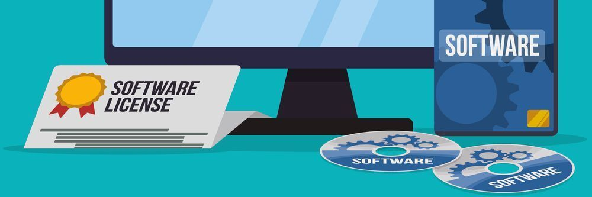
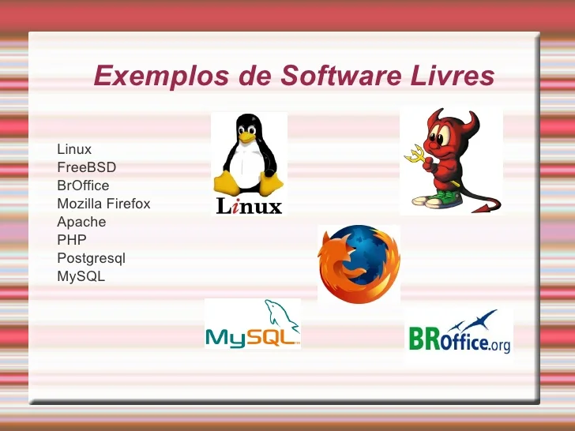
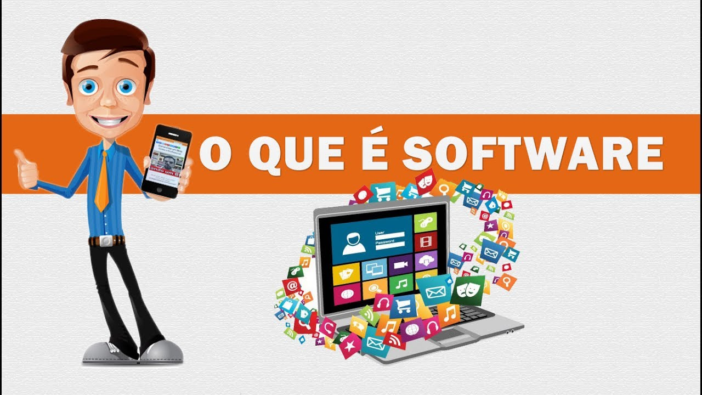

O que é um software?
Software é uma sequência de instruções escritas para serem interpretadas por um computador para executar tarefas específicas. Também pode ser definido como os programas, dados e instruções que comandam o funcionamento de um computador, smartphone, tablet e outros dispositivos eletrônicos. O software é o responsável por fazer a máquina compreender e executar os comandos do usuário. É classificado como a parte lógica e imaterial, cuja função é fornecer instruções para o hardware. O hardware é toda a parte física que constitui o dispositivo. A palavra inglesa software foi usada pela primeira vez em 1958 em um artigo escrito pelo cientista americano John Wilder Tukey. Foi também ele o responsável por introduzir o termo "bit" para designar "dígito binário".
O que é um sistema Operacional?

Um Sistema Operacional de Rede (NOS) é um software especializado projetado para gerenciar recursos de rede, permitindo a comunicação e o compartilhamento de dados entre dispositivos conectados. Ele é amplamente utilizado em ambientes corporativos para coordenar funções como roteamento, autenticação de usuários e segurança de dados. Principais Características O NOS prioriza o tráfego de rede e oferece suporte a múltiplos usuários, centralizando o gerenciamento de recursos compartilhados. Ele integra protocolos de segurança, como firewalls e criptografia, para proteger os dados em trânsito. Além disso, permite que administradores monitorem a integridade da rede e gerenciem dispositivos remotamente.
O que é uma licença de software?

A licença de software é um contrato legal que define os termos sob os quais um software pode ser utilizado. Este documento estabelece as permissões e restrições que o usuário deve seguir ao instalar e utilizar o software. As licenças de software são essenciais para proteger os direitos dos desenvolvedores e garantir que os usuários compreendam suas obrigações legais. Existem diferentes tipos de licenças, cada uma com suas características específicas, que podem variar de acordo com o uso permitido, a distribuição e a modificação do software.
O que é um software licenciado?
Parte fundamental da gestão de ativos de TI, o licenciamento de software oferece segurança e garante que a empresa tire o melhor proveito possível dos serviços digitais Os recursos e serviços digitais tornaram-se indispensáveis para que empresas de qualquer segmento desempenhem suas atividades com sucesso e consigam superar a concorrência. A gestão de Tecnologia da Informação (TI) existe justamente para garantir que os recursos tecnológicos sejam usados de forma segura, funcional e lucrativa – e o licenciamento de software é parte essencial desta estratégia. Assim como os tablets, modems, servidores, data centers, computadores e as redes que os conectam (entre outros itens), os softwares, aplicativos e sistemas integram os chamados ativos de TI: itens físicos e virtuais que compõem a infraestrutura de TI de uma empresa. Desta forma, o próprio licenciamento de software também é considerado um ativo de TI.
O que é um software livre?
Software Livre refere-se a todo programa de computador que pode ser executado, copiado, modificado e redistribuído sem que haja a necessidade da autorização do seu proprietário para isso. Esse tipo de software disponibiliza para seus usuários e desenvolvedores o livre acesso ao código-fonte para que possam realizar alterações da maneira que desejarem. O conceito do software livre, diferente do "open source", é mais focado na ética e seus objetivos fornecem aos usuários liberdade de controle e alteração na execução, moldando-o à sua computação e ao seu processamento de dados, além de conceder liberdade social para a cooperação ativa com todos os usuários e desenvolvedores de sua escolha.
O que é um software Proprietário?
O software proprietário, privativo ou não livre, é um software para computadores que é licenciado com direitos exclusivos para o produtor.[1] Conforme o local de distribuição do software, este pode ser abrangido por patentes, direitos de autor, assim como limitações para a sua exportação e uso em países terceiros. Seu uso, redistribuição ou modificação é proibido ou limitado, exigindo que você solicite permissão para tal ou restringindo de tal forma que não é possível fazê-lo livremente.[2] A expressão foi criada em oposição ao conceito de software livre.s
o que é um software de sistema?

Software de sistema ou programa de sistema é o software projetado para fornecer uma plataforma para outro software.[1] Exemplos de software de sistema incluem sistemas operacionais como macOS, Ubuntu (uma distribuição Linux) e Microsoft Windows, software de computação científica, mecanismos de jogos, automação industrial e aplicativos de software como serviço.[2] Em contraste com o software de sistema, softwares que permitem aos usuários realizar tarefas orientadas ao usuário, como criar documentos de texto, jogar jogos de computador, ouvir música ou navegar na Web, são coletivamente chamados de software aplicativo.[3]
O que é um software Aplicativo?
Na informática, um software aplicativo é um tipo de software concebido para desempenhar tarefas práticas ao usuário para que este possa concretizar determinados trabalhos. Esta característica distingue-o de outros tipos de programas, como os sistemas operativos (que são os que fazem funcionar o computador), as linguagens de programação (que permitem criar os programas informáticos em geral) e os utilitários (que realizam tarefas de manutenção ou de uso general).
O que é um software de Programação?

Software aplicativo é um programa de computador desenvolvido para realizar tarefas específicas para o usuário final, facilitando atividades práticas do dia a dia ou profissionais. Um software aplicativo difere dos softwares de sistema, que controlam o hardware e a estrutura básica do computador, pois ele é focado em atender necessidades concretas, como editar textos, navegar na internet, gerenciar finanças ou criar imagens.
O que é um software de Diagnosticos de software?

O software de diagnósticos é uma ferramenta essencial utilizada por profissionais de assistência técnica para identificar e resolver problemas em dispositivos eletrônicos, como computadores, smartphones e eletrodomésticos. Esses programas são projetados para analisar o funcionamento do hardware e do software, permitindo que os técnicos realizem uma avaliação precisa do estado do equipamento. Com a evolução da tecnologia, esses softwares se tornaram cada vez mais sofisticados, oferecendo uma gama de funcionalidades que facilitam o trabalho dos especialistas em reparo.
O que é um software de Hardware?

O hardware e o software são elementos que fazem parte de um computador, onde cada um deles tem sua função para o desempenho e bom funcionamento. Eles estão presentes em celulares, TVs, computadores, tablets, impressoras e até mesmo nas máquinas de lavar e micro-ondas.